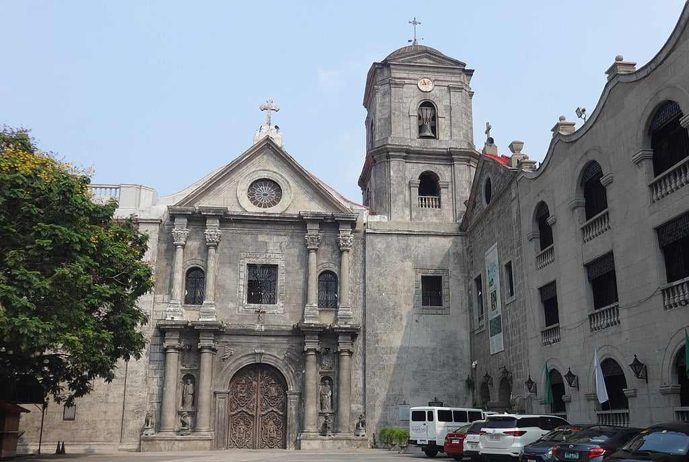
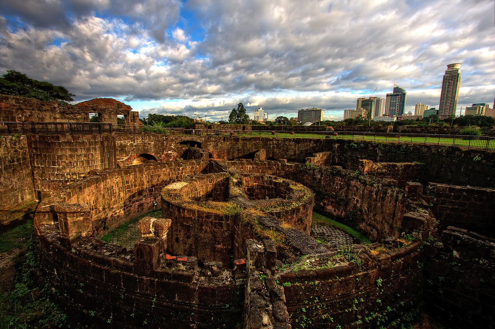
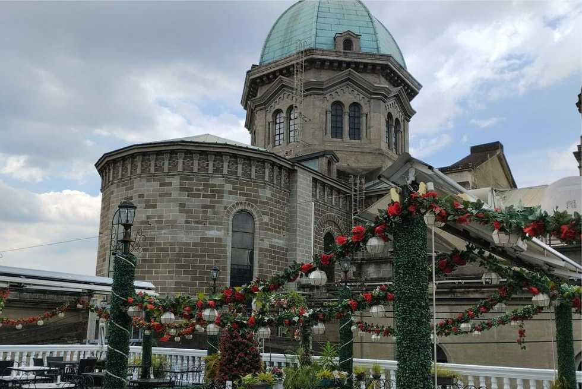
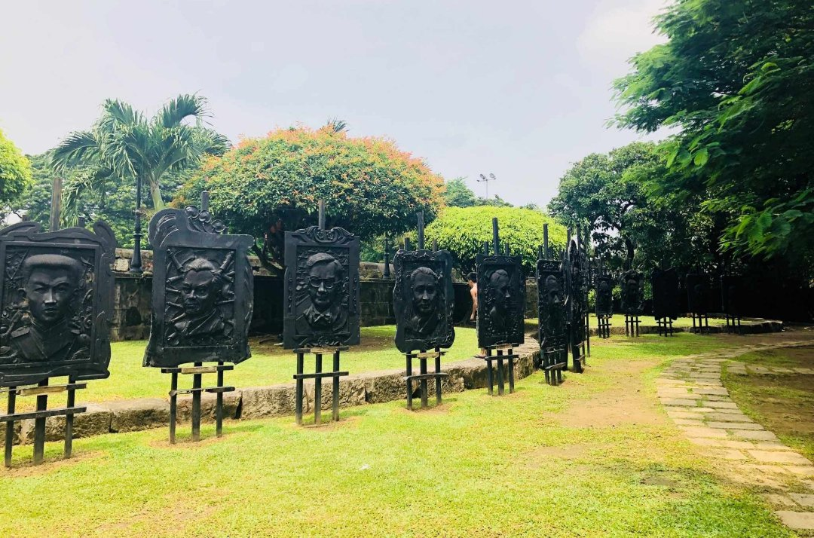

Fort Santiago
Fort Santiago, built in 1571, is a citadel built by Spanish navigator and governor Miguel López de Legazpi for the newly established city of Manila in the Philippines. The defense fortress is located in Intramuros, the walled city of Manila.
Read More
Manila Cathedral
Manila Cathedral is recognized as the main Roman Catholic Church in the Philippines. Located in the Plaza de Roma, Intramuros, its official name is Manila Metropolitan Cathedral-Basilica and is the seat of the Archbishop of the Archdiocese of Manila.
Read More

San Agustin Church
The San Agustin Church was the only building left intact after the destruction of Intramuros in WWII. Built between 1587 and 1606, it is the oldest church in the Philippines. The massive facade conceals an ornate interior filled with objects of great historical and cultural merit.
Read More
Casa Manila Museum
The Casa Manila or “Manila House” is a living museum that features the lifestyle of an affluent Filipino family during the late Spanish colonial period. The façade of Casa Manila was patterned after a house that once stood at Jaboneros Street in the Chinese district of Binondo in the 1850’s.
Read More
Plaza San Luis
Plaza San Luis is a complex inside Intramuros that comprises five houses: Casa Manila, Casa Blanca, Casa Urdaneta, Los Hidalgos, and El Hogar Filipino.The complex was constructed after World War II as an effort to preserve the history of the Spanish era in the Philippines.
Read More

Baluarte de San Diego
Baluarte de San Diego is a spade-shaped bulwark located inside the historic district of Intramuros in Manila City. This fort was created from the remains of the upper portion of a circular watch tower built from 1586-1587. he baluarte had been breached and fallen in 1762 during a battle with the British forces.
Read More
Museo de Intramuros
Museo de Intramuros is an ecclesiastical museum operated and managed by the Intramuros Administration. It is located at the reconstructed San Ignacio Church and Convent within the historic walled area of Intramuros in Manila
Read More

La Cathedral Cafe
La Cathedral Café is one of the popular restaurants in Intramuros, the historical center of Manila within the walls. That brings customer the European vibes with its rustic Neo-Romanesque charm of Manila Cathedral as the backdrop.
Read More

Galeria de los President
The President's Gallery is an outdoor installation along Santa Lucia Street inside the Walled City of Intramuros. This artwork features large plaques of all former presidents of the Philippines, starting with Emilio Aguinaldo, the country's first president.
Read More